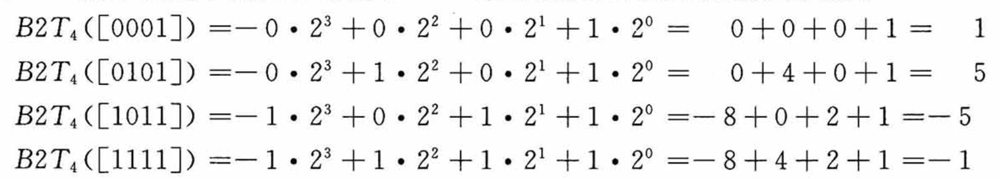

格物致知(1)——你什么进制？我什么进制？
在我入坑之前就时长听大佬说：计算机的世界是二进制的，所有的信息都用0和1来表达。这对习惯于使用十进制的人脑来说显得捉摸不透：为什么要用二进制，十进制不香吗？另外啥叫信息？计算机为啥要表达？它要表达啥？不知道年轻的你有没有此等困惑，今天就让我们来揭开遮掩的幕布，看破这背后的戏法与魔术。
你什么进制？我什么进制？
在研究计算机为什么是二进制之前，我们先抛开先入为主的偏见，思考一下：为什么人脑习惯用十进制，阿拉伯数字为啥用10当做基数来设计？这个问题很简单，掰掰我们的手指，数一数一共有几根，答案也就呼之欲出了。得益于我们的手指数量，最早的计数方式便选择10作为基数，而随着智慧的启蒙与时代的发展，阿拉伯人设计出以10作为基数的阿拉伯数字，推动了数字革命，终而家喻户晓、流传沿用至今。幼儿园老师教我们加减法运算时，其核心就在于凑10，当我们掌握了凑10技巧以后（也就是明白了进制的意义），就可以口算相当大规模的数字加减运算了。
而在计算机的世界则流行的是一种二进制运算，为什么是2而不是10呢，这是因为二值信号更容易被表示、传输和存储，2这个数字很有power，他可以表示两种极端对立的特性，比如：有和无、阴与阳、光与暗、高和低、顺时针和逆时针等等。对二值信号进行存储和计算的电子线路简单可靠、易于设计，制造商可以在一个单独的硅片上集成数百万乃至数十亿个这样的电路。
正所谓太极生两仪、两仪生四象、四象生八卦，单个二值信息本身作用有限，但是当把多个二值信息排成队、通过排列组合就可以一生万物，正如我们在第零讲中反复提到的核心思想：对抽象的事物赋予特定的语义。对连续二值信息的排列组合可以让我们对任何有限集合赋予语义，比如字符编码、CPU指令，再比如今天要讲的主角：数值信息的表达与存储。
初识二进制
二进制运算法则和十进制没什么区别，不过是逢2进位罢了，这里介绍一个简单的口算进制转换技巧：我们按照从低到高，记住一连串的二进制位为1的实际值，比如B11111111从低位到高位分别是1、2、4、8、16、32、64、128，当我们有一个十进制数为69，想要转换成二进制来表示的话，就用这些数字来凑：69=64+4+1，亦即第0、2、6位为1（计算机的世界下标往往从0开始），其余位为0，最终写成B01000101。这里的前缀B表示二进制，是英文binary首字母的缩写。
你可能还见过其他的二进制表示法，不同语言的写法可能不同，比如python里是用0b作为前缀，但这些都不重要，他只是为了区分其他进制而携带的标记，我们只需要知道它表示二进制就行。
好，看到这里相信你已经学会怎么口算了，那么留一个问题给读者：250用二进制表示要怎么写呢？
超量召唤：十六进制
有的同学可能注意到，为啥69的二进制最高位在第6位，我却在最高位前面补了个0凑成8位呢？这是因为大多数计算机存储的最小单元是字节(Byte)，一个字节=8个位(bit)，常常写作1B(yte)
=
8b(its)，故而常常以8作为分组。因此，一个字节表达的范围就是B00000000~B11111111，换算到十进制就是0~255，由于使用二进制书写显得格外不方便，大家就对2进行了折叠，选择2^4=16来作为基数（二进制的怪兽有四只，要上了，欧巴类、xyz召唤：十六进制），用十六进制来表示（使用数字0~9,A~F来表示每个位值，也就是从0到15，其中A~F大小写均可）。如此，一个字节就只需要两个十六进制数来表示，大大缩减了书写长度，此时值域区间为0x00~0xFF（这里的0x是用户表示十六进制的前缀，可能还有0xFFH、FFH的写法，H是十六进制——Hex的缩写）。

所以十六进制只是二进制的升维，本质上没有什么区别，那么十六进制怎么口算呢？很简单，我们通过展开十六进制数、转成二进制格式，在此前二进制口算窍门的基础上，再做一层映射即可：

让我们来试试：十进制的250，对应的十六进制数怎么表示呢？首先我们把250拆分成：128+64+32+16+8+2，也就是对第1、3、4、5、6、7位置1、其余置0，二进制写作B11111010，进一步，每4位做一下折叠，最终得到：0xFB。
当然了，在我们熟悉十六进制数字之后，可以跳过二进制转换这一层，直接使用十六进制数来口算：比如250=15*16+10，15就是F、10就是B，也可以得到0xFB的结果。
实际上我们只需要掌握十六进制数的阅读方法即可，如果口算不是为了装B，那就毫无意义(doge）。
数值类型与尺寸
我们上中学的时候，对数字的划分一般都是采用自然数、实数、复数等概念来进行划分，但在计算机的世界，划分规则却迥然不同。各大编程语言往往都会定义各种各样的数据类型，它们作用不同、长短不一，但总体而言，数值在大分类上可以被归类成这两种：整型数和浮点型数。在这两大类的基础上，编程语言一般会在设计上根据尺寸长短（也就是确定数值范围、即多少个字节），将整型和浮点型细分成多种类型。另一方面，由于数值有正负之分，为了便于日常开发者的使用，在大部分编程语言里还对每一种类型再进一步拆分成有符号和无符号型。
整型数就是整数，不管他的尺寸有多大，哪怕你定义成64个字节的超大范围，它能表示的数值也仅限于整数。比如我们定义一个uint8_t的类型，长度为1个字节，那么它所能表示的数值范围就是0~255，假如我们想让这个范围能表示负数，那么不妨再设计一个sint8_t型，长度依然是1个字节，此时数值范围就是-128~127。对于无符号数来说，如何使用单字节来存储0~255显得非常直接，0就存储为0x00、1就存储为0x01、240就存储为0xF0、255就存储为0xFF，这和十六进制表示数值的设计是完全统一的，我们姑且也把这叫做一种编码（尽管这层转换什么都没做）。但是负数要怎么存储呢？目前并没有一个单独的信息位来告诉我们这个数是positive还是negative呀。
麻烦的符号
看来简单的一比一编码行不通，一旦涉及了正负的概念，还是得考虑编码规则。考虑到正负本身无非也是一种信息，且恰好就是个二值信息，所以如果我们在原有尺寸的基础上，让出最高位、作为正负符号的表示，其余位仍然代表数值，看起来就可以解决这个case。比如对于此前我们设计的sint8_t，它一共有8个bits，我们让最高位（第7位）为0时代表正、为1时代表负，那么它所能表示的范围就变成了-127~127。此时B11111111在作为sint8_t的时候，它的值就是-127，而作为uint8_t时，它的值是255。
这种简单粗暴的设计看起来很美好，但实际上却经不起推敲：比如我们考虑对-4和+8做加法运算，二进制写作B10000100和B00001000，正常的结果应该是+4，当计算机操作二进制数按位计算时，答案却是错误的B10001100，也就是-12：
1 | |
经过分析，我们发现这里第一个问题就在于符号位是不能直接进行加法运算的，因为我们在计算时并不知道最终结果应该是正还是负。此外，第二个问题在于正数和负数的加法运算，其实相当于是减法，这里的计算逻辑实际上忽略了这一事实，而是进行简单的4+8，所以最终才得出了-12的结果。
尽管我们经过分析，或许能够梳理出一套正确计算的逻辑，但从计算机来说，这就显得太过于复杂了，对于计算机来说，它只能做加法运算，至于你这些数字的背后代表了哪些数值，它是丝毫不关心的。因此，我们需要精心设计一个编码机制，使得它能够在计算机的世界对正负数的加减法操作（计算机只能做加法，减法也是加法（与负数相加））得到一个正确结果的相应编码值。
整型数编码
无符号数
对于无符号数来说，完全可以沿用最自然的编码规则：
长度为w的0、1串映射到无符号整数，比如：

显得既直观又简单。由于无符号数不涉及减法，也没有符号，所以计算机的加法运算无论对于哪两个数操作，结果都是正确的。
有符号数
而对于有符号数，最常见的一种编码方式叫做补码(two's complement)。在这个定义中，将字的最高有效位解释为负权(negative weight)，类似无符号数，使用函数来定义：

最高位\(-x_{w-1}\)也叫符号位，它的权重为\(-2^{w-1}\)，当该符号位为时表示负数（值为负），为0时表示整数（值为非负，也就是正数+0），这么说比较抽象，还是展开看看几个例子：

为什么要设计这个权重呢，实际上它是对减法运算的一种模拟，对于负数来说，它最终用于表达的二进制值是权重作用后的结果，如此，当我们对复数进行加法运算时，这个权重就发挥了作用。
比如重新考虑-8+4，对sint8_t类型，-8的补码是B11111000，4的补码是B00000100，二者相加：
1 | |
通过计算机的加法运算后，得到的正好就是-4的补码。
再比如-4+8：-4的补码是B11111100，8的补码是B00001000，二者相加：
1 | |
由于尺寸限制，这里的加法运算产生了溢出，最终溢出位被丢弃，而最高位（符号位）刚好因为进位而变成0（语义上代表非负数），这一巧合实际上就是我们精心设计的补码编码规则而产生的。
补码、反码与原码
各版本大学计算机基础的教材往往都会提到这么几个概念，补码我们已经知道了，那么啥叫反码和原码呢？
反码和原码是另外两种表示有符号数的标准方法： 原码(Sign-Magnitude)：最高有效位是符号位，用来确定剩下的位应该取负权还是正权：
反码(Ones' Complement)：除了最高有效位的权是\(-(2^{w-1}-1)\)而不是\(-2^{w-1}\)，它和补码完全一样：
对于原码和反码来说，它们对数字0的编码都有两种：B00000000被解释成+0，在原码编码中B10000000被解释成-0、反码编码中B11111111被解释成-0。反码和原码相对于补码是截然不同的编码方式，只可惜大部分教科书混淆了三者之间的关系，从字面值上看，正数的补码和原码一致，而负数的补码则是反码+1（毕竟权重里多了个-1），这种取巧的办法更适合我们人类去计算有符号数的补码编码值，但实际上它们之间没什么关系，每种编码方式本身都是内部闭环的。所以坊间总流传这么一个说法：正数的补码是它的原码、负数的补码是它的反码+1。久而久之，我们只学会了怎么计算有符号数的补码编码值，却根本没搞懂补码的设计奥义，当真是买椟还珠。
虽然上古时代曾生产过基于反码表示的机器，但现代机器都一致使用补码来编码有符号数。此外，浮点数使用的编码方式是原码，我们稍后会看到。
C语言中的数值类型
上面的sint8_t,
uint8_t是我杜撰的，我们找个真实的编程语言来举例。比如，在C语言中，有着以下的常见类型：
注意到C在设计上针对整型数分成了short、int、long、int32_t、int64_t这几种，它们的尺寸单调非递减，且在不同位数的机器架构里长度不同。char是一个比较特殊的类型，它只有单个字节，常用来表示ASCII字符，但本质上存储的只是个数字罢了，它具体是什么取决于你怎么用它。char这种设计放在现代来看显得小家子气（比如go直接定义byte型），这主要是因为C诞生年代太过久远，和现代编程语言的设计相当脱轨。
实际上x64（64位）机器也可以编译x86(32位)的C程序，此时类型尺寸按32位的标准生效。
有符号数和无符号数的转换
截止到目前，我们对有符号数和无符号数可以说是区别对待，可是在实际生产环境中，我们很可能会遇到两种类型数混用甚至需要进行计算的场合，那怎么办呢？不同语言都提供了它们之间的转换方法，比如在C语言中就有显式强制类型转换和隐式类型转换这两种。然而语言层面往往只是提供能力，二者进行计算最终得到的值，归根结底取决于你对它的解读方式。
举个例子，比如下面的代码：
1 | |
前方施工中。。。
本博客所有文章除特别声明外，均采用 CC BY-SA 4.0 协议 ，转载请注明出处！